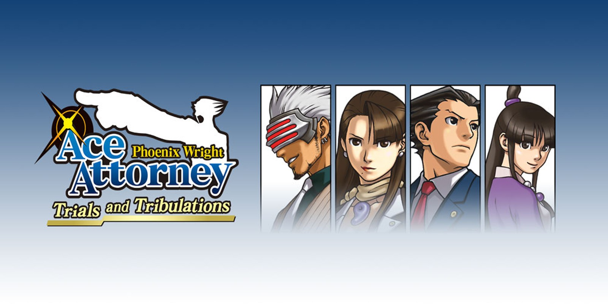
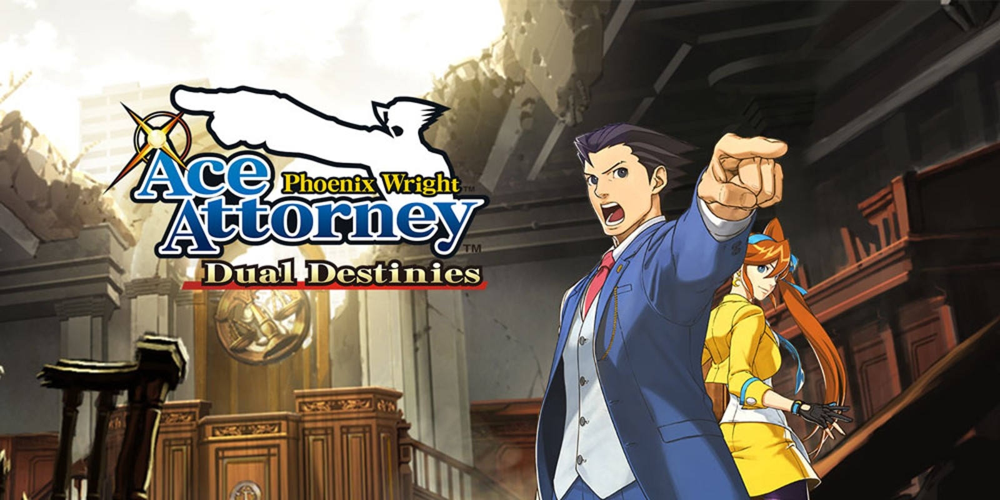
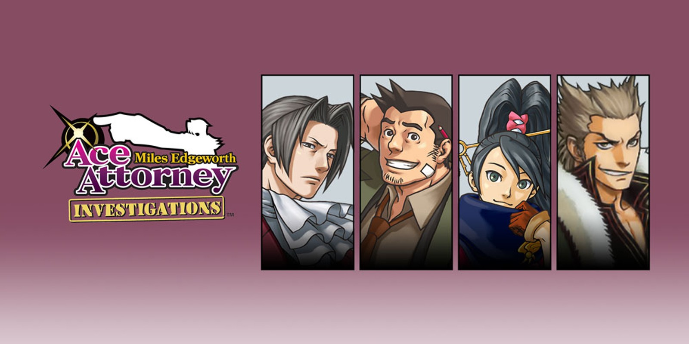
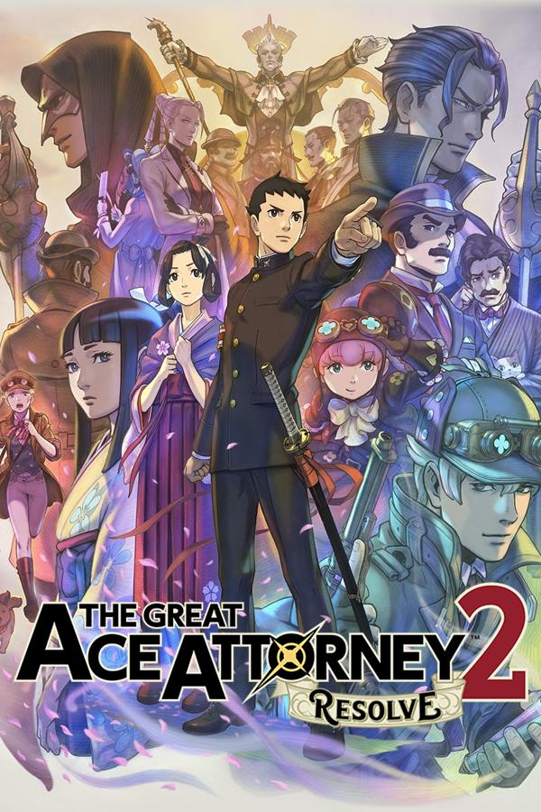
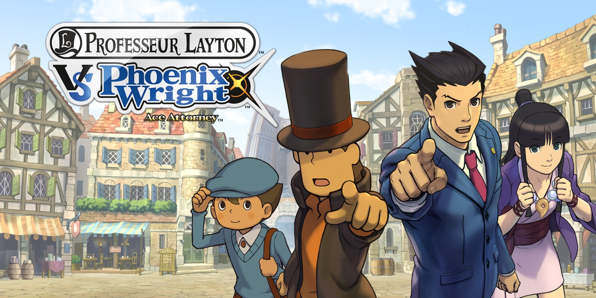

Quick Access
Main Series
- Phoenix Wright: Ace Attorney
- Phoenix Wright: Ace Attorney - Justice For All
- Phoenix Wright: Ace Attorney - Trials and Tribulations
- Apollo Justice: Ace Attorney
- Phoenix Wright: Ace Attorney - Dual Destinies
- Phoenix Wright: Ace Attorney - Spirit of Justice
Ace Attorney Investigations
The Great Ace Attorney
Crossover
More from the author
Play Order
Don't know where to start/what order to play the games in? Check out this chart made by u/Gabo2oo:

Ace Attorney Play Order chart by u/Gabo2oo
Footnotes from u/Gabo2oo:
-
Available systems listed apply for the Americas and Europe only.
-
Mainline games 4 through 6 are available on Nintendo 3DS / Android / iOS individually (not as part of the "Apollo Justice Trilogy" compilation).
-
Likewise, mainline games 1 through 4 are available on Nintendo DS individually.
-
The remaster for "Ghost Trick" will be released on Android / iOS in Spring 2024.
About the original release order:
-
The "Ace Attorney Investigations" spin-offs were released right after "Apollo Justice: Ace Attorney", although playing them in this order is seldom recommended nowadays.
-
The "Professor Layton vs. Phoenix Wright" crossover came out right after the AAI spin-offs. Some might recomend playing it at any point after the "Phoenix Wright Trilogy" (Games 1-3).
-
"PW: AA - Spirit of Justice" was released in-between both games in "The Great Ace Attorney" duology. It is not recommended to play them like this at all.
About this site
The purpose of this site/guide is to create deeplinks to different guides and resources for the Ace Attorney series, such as the ones on Strategy Wiki. The guides provided by Strategy Wiki are fantastic, however, navigating to specific pages to progress in the games can be a time-consuming process. This site aims to simplify the navigation process by directly linking to the relevant content, making them quickly accessible.
This site was made using mdbook, a tool for creating books with Markdown. The public repository of the site is available here (if anyone wants to fork/contribute).
Note: I mainly made this site for personal fast-access to resources I find useful. However, I hope that others will also find it helpful and contribute to its development if they wish to.
Games
-More - Ghost Trick
Navigation
Main Series
- Phoenix Wright: Ace Attorney
- Phoenix Wright: Ace Attorney - Justice For All
- Phoenix Wright: Ace Attorney - Trials and Tribulations
- Apollo Justice: Ace Attorney
- Phoenix Wright: Ace Attorney - Dual Destinies
- Phoenix Wright: Ace Attorney - Spirit of Justice
Navigation
Phoenix Wright: Ace Attorney
Navigation
Phoenix Wright: Ace Attorney - Justice for All
Navigation
Phoenix Wright: Ace Attorney - Trials and Tribulations

Navigation
Apollo Justice: Ace Attorney
Navigation
Phoenix Wright: Ace Attorney - Dual Destinies

Navigation
Phoenix Wright: Ace Attorney - Spirit of Justice
Navigation
Ace Attorney Investigations
Navigation
Ace Attorney Investigations: Miles Edgeworth

Navigation
Gyakuten Kenji 2

Navigation
The Great Ace Attorney
Navigation
The Great Ace Attorney: Adventures
Navigation
The Great Ace Attorney 2: Resolve

Navigation
Crossover
Navigation
Professor Layton vs. Phoenix Wright Ace Attorney

- Chapter 1: On a Dark and Stormy Night
- Chapter 2: English Turnabout
- Chapter 3: Mysterious Labyrinthia
- Chapter 4: The Fire Witch
- Chapter 5: The Great Witch
- Chapter 6: The Golden Court
- Chapter 7: A Taste of Despair
- Chapter 8: Secret of Underground Ruins
- Chapter 9: The Story's End
- Chapter 10: The Final Witch Trial
- Chapter 11: The Last Inquisitor
- Chapter 12: The First Story
- Special Episodes (Post Game)
Note: Chapters 8 and 9 are not written/unavailable at this time.
Navigation
Other games
Navigation
Ghost Trick: Phantom Detective
- Chapter 1: 7:02 PM
- Chapter 2: 7:31 PM
- Chapter 3: 8:04 PM
- Chapter 4: 8:23 PM
- Chapter 5: 8:34 PM
- Chapter 6: 9:03 PM
- Chapter 7: 10:05 PM
- Chapter 8: 10:55 PM
- Chapter 9: 11:13 PM
- Chapter 10: 11:41 PM
- Chapter 11: 12:10 AM
- Chapter 12: 12:25 AM
- Chapter 13: 12:51 AM
- Chapter 14: 1:28 AM
- Chapter 15: 2:55 AM
- Chapter 16: 4:19 AM
- Chapter 17: 5:10 AM
- Final Chapter